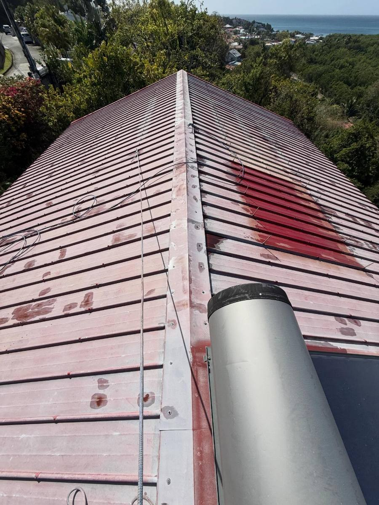
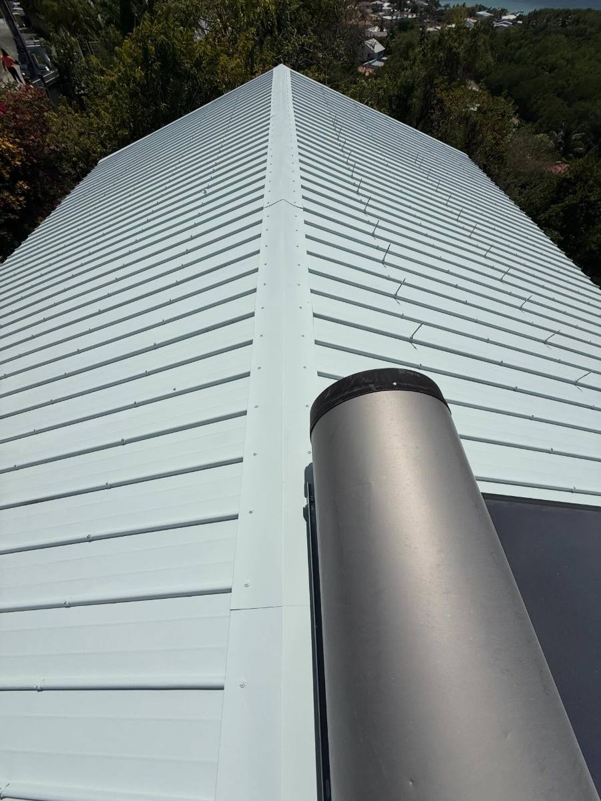

Couvreur 974 · Saint-Gilles-les-Bains
Peinture et rénovation de toiture tôle à La Réunion.
Des toitures nettoyées, préparées et protégées pour gagner en éclat et mieux résister au climat réunionnais.
Chantier réelToiture tôle remise en étatIntervention autour de l'Ouest réunionnais
MS Couverture
Un nom déjà associé à la toiture, avec une adresse claire à La Réunion.
Le site couvreur974.fr présente l'activité réunionnaise de MS Couverture : diagnostic de toiture tôle, peinture, étanchéité, nettoyage et ravalement autour de Saint-Gilles-les-Bains. L'objectif est simple : donner un contact local clair, sans mélanger les demandes de La Réunion avec l'établissement historique de Méré.
Savoir-faire MS Couverture
Une méthode de couvreur structurée : inspection, préparation du support, reprise des points faibles, protection et finition propre.
Assurance décennale
MS Couverture dispose d'une assurance décennale pour les travaux concernés. L'attestation peut être présentée avant chantier.
Adresse Réunion lisible
Les demandes de ce site concernent La Réunion, avec une adresse locale à Saint-Gilles-les-Bains pour l'Ouest 974.
Confiance
Ce que les clients apprécient chez MS Couverture.
Sur une toiture, le client veut surtout être rassuré : comprendre le problème, savoir quoi réparer, voir des chantiers propres et obtenir un devis clair avant intervention.
Réactivité
Une demande de fuite ou de toiture abîmée doit être prise au sérieux rapidement, surtout avant les fortes pluies et la saison cyclonique.
Travail soigné
Préparation, nettoyage, protection des abords et finitions nettes comptent autant que la peinture visible depuis la rue.
Conseil avant travaux
Avant de peindre une toiture tôle, il faut vérifier la rouille, les vis, les faîtages et les jonctions pour éviter de masquer un vrai défaut.
Avant devis
Les signes qui méritent une visite.
Méthode
Pas une couche rapide. Un support préparé.
À La Réunion, la peinture tient seulement si la toiture est bien lavée, contrôlée et reprise aux bons endroits. Vis, faîtages, zones de rouille, jonctions et points d'eau sont vérifiés avant application.

Finition blancheUn rendu net, moderne et très lumineux sous le soleil réunionnais.
Choix couleur
Choisir une teinte de rénovation.
Survolez une teinte pour avoir un aperçu indicatif sur une toiture tôle. Les zones très claires visibles sur une vieille couverture viennent souvent de l'usure, pas d'une peinture neuve.

Teinte sélectionnéeRouge intense
Interventions
Ce qu'on vient réparer, protéger ou remettre au propre.
Peinture toiture tôle
Préparation, traitement anti-rouille et finition résistante aux UV.
Étanchéité toiture
Reprise des jonctions, faîtages, vis et zones d'infiltration.
Nettoyage toiture
Lavage, démoussage et remise au propre avant protection.
Peinture toiture tôle 974
Traitement anti-rouille, préparation et finition adaptée aux UV et aux embruns.
Voir la page peintureÉtanchéité toiture 974
Recherche de fuite, faîtage, vis, rives et infiltrations après forte pluie.
Voir la page étanchéitéNettoyage toiture 974
Démoussage, lavage et contrôle avant peinture ou entretien de toiture tôle.
Voir la page nettoyagePrix peinture toiture 974
Les critères qui changent le devis : surface, accès, rouille, préparation et finition.
Comprendre le prixFuite toiture 974
Infiltration, faîtage, vis ou tôle soulevée : savoir quoi contrôler avant réparation.
Voir réparation fuiteDevis couvreur 974
Préparez une demande claire avec photos, commune et type de problème observé.
Préparer un devisPages locales
Un couvreur proche de votre commune.
Devis gratuit
Une toiture à repeindre, nettoyer ou étancher ?
Envoyez la commune, quelques photos et le besoin. Une visite permet de confirmer l'état du support et le bon traitement.